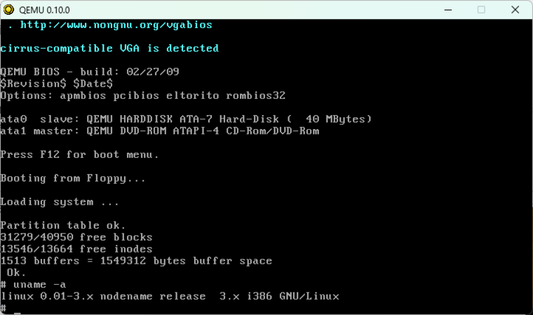
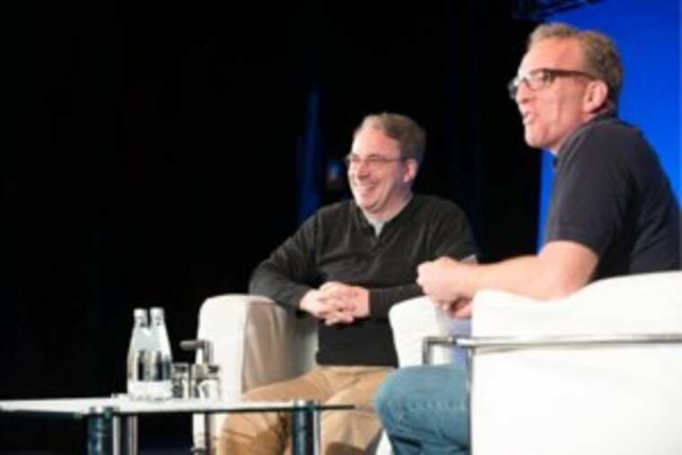

Статья первая · Биография
Линус Торвальдс: инженер, который отказался быть визионером
В августе 1991 года студент из Хельсинки отправил в сетевую конференцию короткое сообщение о «хобби, которое не будет большим и профессиональным». Через тридцать с лишним лет его ядро работает на серверах, телефонах, автомобилях и даже на вертолёте, летавшем над Марсом. Эта статья — о том, как умение решать скучные задачи оказалось важнее громких обещаний.
Автор: редакция журнала «Код и люди» · · Время чтения: около 11 минут
Детство в Хельсинки и первые машины
Любой разговор о Linux рано или поздно упирается в бытовую деталь: ядро, на котором стоит половина интернета, выросло из личного компьютера и любопытства подростка. Линус Бенедикт Торвальдс родился 28 декабря 1969 года в Хельсинки, в семье журналистов — Анны и Нильса Торвальдсов. Его дед, Лео Тёрнквист, был статистиком, второй дед, Оле Торвальдс, — поэтом. Семья принадлежит к шведоязычному меньшинству Финляндии, и это объясняет, почему в первых письмах Линуса английский был чуть «деревянным», а мысль — предельно прямой.
Компьютеры начались с VIC-20 — домашней машины, которую по нынешним меркам можно считать калькулятором с клавиатурой. Затем появился Sinclair QL: странная британская машина, для которой в Финляндии было почти невозможно достать программы. Линус не стал ждать милостей от рынка: написал ассемблер, несколько игр и библиотеку для графики в стиле Pac-Man. Это важный штрих к портрету: будущий создатель ядра начинал как человек, которому просто не дали готового инструмента.
В 1988 году он поступил в Университет Хельсинки, а в 1989-м, как это принято в Финляндии, ушёл служить — по программе офицерской подготовки, в бригаду «Нюланд», с должностью наблюдателя-артиллериста. Вернувшись к учёбе в 1990-м, он впервые увидел настоящий Unix — на микро-VAX под управлением ULTRIX. Именно тогда в голове подростка, знавшего ассемблер, соединились две вещи: красота спецификации Unix и бытовая доступность персоналки.
Письмо 1991 года
В 1991 году Линус купил 386-ю машину и установил MINIX — учебную операционную систему Эндрю Таненбаума, к которой прилагалась книга Operating Systems: Design and Implementation. MINIX была хороша для лекций и плоха для экспериментов: терминал, который хотелось заполучить Линусу, работал не так, как ему было удобно. Он принялся писать свои драйверы, потом свою файловую систему, потом часть ядра — сначала как «упражнение», потом уже не мог остановиться.
Я делаю (бесплатную) операционную систему (это просто хобби, она не будет большой и профессиональной, как GNU, для 386(486) AT-клоны). Она пишется с апреля и уже почти готова. Мне бы хотелось получить отзывы о том, что нравится и что не нравится в MINIX, поскольку моя ОС была задумана как похожая на MINIX (та же физическая структура файловой системы, среди прочего).
Читая это сегодня, легко улыбнуться. Но в письме есть фраза, которая стоит целой книги о характере Торвальдса: «это просто хобби». Он не обещал перевернуть индустрию. Он обещал «починить то, что мешает». Спустя годы на вопрос, в чём его главная заслуга, Линус ответит приблизительно так: он не смотрел на три-четыре года вперёд, он смотрел на яму перед собой и засыпал её.
Название тоже вышло случайным. Сам Линус хотел «Freax» — от free, freak и буквы X, которой тогда принято было обозначать варианты Unix. Администратор FTP-сервера университета Ари Леммке завёл каталог на свой вкус и назвал его linux. Вернуться к «Freax» было уже неловко.

Первые версии выглядели аскетично. Ядро 0.01 умело работать с одной файловой системой, не знало о сети и поддерживало единственный драйвер диска. Именно поэтому первое, что сделал Торвальдс после релиза, — начал принимать патчи. Он не пытался написать всё сам: он показывал людям узкое место и объяснял, как его закрыть. Через два года, 14 марта 1994-го, вышла версия 1.0.
Как работает Linux: ядро, драйверы, сообщество
Слово «Linux» в быту означает три разные вещи, и это главный источник путаницы. Во-первых, ядро — программа, которая управляет памятью, процессами, устройствами и правами доступа. Во-вторых, дистрибутив — сборка, где рядом с ядром лежат системные утилиты, менеджер пакетов и рабочий стол. В-третьих, экосистема — сообщество людей и компаний, которые десятилетиями шлют друг другу патчи.
Ядро пишут на языке C и ассемблере, а главный принцип его устройства — модульность. Драйвер видеокарты, драйвер сетевой платы, драйвер файловой системы живут рядом с ядром, но подключаются тогда, когда нужно оборудование. Благодаря этому одно и то же ядро запускается на сервере без монитора и на телефоне. Файловая система, права и сетевой стек унаследованы от идей Unix — той самой системы, которую Торвальдс увидел на ULTRIX в 1990 году.
| Версия | Дата | Что появилось |
|---|---|---|
| 0.01 | Первая публичная сборка: одна машина, один пользователь, минимум драйверов. | |
| 1.0 | Официальная первая стабильная версия, тысячи контрибьюторов вокруг. | |
| 2.0 | Поддержка многопроцессорных машин и первые шаги к массовому серверному железу. | |
| 2.6 | Новая модель потоков, вытесняемая работа ядра — ядро перестало «залипать». | |
| 4.x | Бессрочная нумерация: версии меняются быстрее и без пафоса. | |
| Таблица составлена по материалам Wikipedia; конкретные номера версий приведены как ориентир, а не как строгая хронология всех изменений. | ||
Отдельная тема — лицензия. Сначала Линус запрещал коммерческое использование своего кода. Осенью 1991 года он пошёл на лекцию Ричарда Столлмана в Техническом университете Хельсинки, где ему объяснили, почему запрет мешает распространению. В итоге ядро перешло на GNU GPL v2 — и это решение, наряду с технической удачей, определило его судьбу.
Почему это сработало
- Разделение труда. Ядро выпускается как один проект, но улучшают его тысячи людей: значительная часть вкладов — драйверы под конкретные устройства.
- Длинный горизонт. Ядро обязано работать без перезагрузки годами — поэтому сообщество так болезненно относится к «быстрым» решениям.
- Публичная техника. Обсуждение патчей идёт в рассылке, а не в закрытом трекере, поэтому любой младший инженер может увидеть, как мыслят мейнтейнеры.
Git: инструмент, родившийся из скандала
В 2002 году ядро переехало в BitKeeper — проприетарную систему контроля версий, авторы которой дали разработчикам бесплатную лицензию. Сделка рухнула в 2005 году, когда отношения между компанией и сообществом испортились. Остаться без инструмента было нельзя: десятки тысяч файлов, сотни людей, ежедневные правки.
Тогда Линус за несколько недель написал Git — распределённую систему, где каждый разработчик хранит полную историю проекта у себя. Идея для 2005 года почти кощунственная: зачем копировать всю историю на каждую машину? Ответ оказался простым — потому что это быстро, надёжно и не требует доверия к центральному серверу. Через несколько лет Git перестал быть «инструментом для ядра» и стал стандартом индустрии. Сейчас на нём лежат и Android, и этот учебный сайт.

- Git
- Распределённая система контроля версий. Каждый клон — полноценная копия истории.
- Subsurface
- Программа для планирования погружений с аквалангом, которую Линус начал писать в 2011 году для себя: хобби снова оказалось полезным другим.
- Sparse
- Утилита статического анализа кода, появившаяся потому, что в большом проекте важно ловить ошибки до запуска.
Характер: почему его боятся и уважают
Линус Торвальдс известен не только кодом. Его письма в рассылке годами были жёсткими, а публичные выпады — громкими: скандальная фраза в адрес Nvidia на лекции в Университете Аалто в 2012 году обошла все новостные сайты. Сам он объяснял стиль просто: ему нужно, чтобы люди слышали, что код плох, а не что автор кода плох, — и это не всегда удавалось объяснить.
В 2018 году всё изменилось. В ядро ввели новый Code of Conduct, и Линус опубликовал извинение: он назвал свои прошлые атаки «непрофессиональными и неоправданными» и на несколько недель отошёл от работы. Это важная часть истории Linux: инструмент, который создал один человек, постепенно стал коллективным — со своими правилами, ритуалами и границами допустимого.
Разговоры дешёвы. Покажите мне код.
Сегодня его работа — не написание строк, а приём и отклонение патчей. Он остаётся человеком, который решает, что попадёт в ядро, а что нет, и от этого решения зависят миллионы устройств. Ещё в 2006 году его собственный вклад оценивали примерно в 2 % кода; сейчас — существенно меньше. И это не умаляет заслуги: режиссёр не обязан играть все роли.
Linux в числах и таблицах
Цифры в инфраструктурных проектах быстро устаревают, поэтому здесь — не точные значения, а порядок величин и смысл, который за ними стоит.
| Область | Примеры | Роль ядра |
|---|---|---|
| Серверы | веб-хостинг, облака, базы данных | основная операционная среда интернета |
| Мобильные устройства | Android и производные платформы | основа системы и драйверов |
| Встраиваемые системы | роутеры, телевизоры, автомобили, станки | ядро без рабочего стола |
| Наука | кластеры, эксперименты, марсианские миссии | среда для расчётов и автономной работы |
| Суперкомпьютеры | список TOP500 | почти единственная операционная платформа |
Есть и обратная сторона. Чем больше систем зависит от одного ядра, тем важнее стабильность и тем дороже любая ошибка. Именно поэтому в сообществе Linux так сильны традиции ревью кода и так медленно принимаются «инновационные» патчи. За скорость здесь платят совместимостью, а совместимость — процессорами, которые выпущены десять лет назад.
Что происходит сегодня
Торвальдсу 56 лет, он живёт в США, работает под эгидой Linux Foundation и по-прежнему отвечает за выпуск новых версий ядра. Он отказался от предложения Стива Джобса перейти в Apple в 2000 году — работа над Linux была важнее. В 2012 году он получил Millennium Technology Prize, в 2014-м — Computer Pioneer Award от IEEE, в 2018-м — Masaru Ibuka Consumer Electronics Award.
Куда идёт проект? В сторону более строгой безопасности, поддержки новых архитектур и — что важно для этой статьи — в сторону людей. За последние годы в сообществе утвердилась практика публичного ревью и более аккуратных формулировок в дискуссиях. Это не мелочь: культура общения и есть часть архитектуры проекта.
Три цитаты, которые объясняют подход Линуса
- «Разговоры дешёвы. Покажите мне код» — принцип, по которому работает вся рассылка разработчиков ядра (LKML).
- «Это просто хобби, оно не будет большим и профессиональным» — из письма 1991 года: он действительно так думал.
- «Я хотел бы быть приятным человеком и ругаться меньше» — извинение 2018 года, после которого в проект пришёл кодекс поведения.
Такую же логику можно применить к любому проекту: найти скучную, но реальную проблему — а потом засыпать ту самую яму.
Смотреть и слушать
Без JavaScript и внешних библиотек видео встраивается через простой iframe с сервиса YouTube. Если ролик не открывается в вашем браузере, ниже есть прямые ссылки.
Выступление Линуса на TED
Лекция для разработчиков о Git
Как Линус произносит слово «Linux»
Записал сам Линус Торвальдс в 1994 году, и она долгие годы лежала в исходниках ядра в каталоге SillySounds. Файл распространяется по лицензии GNU GPL v2.
Формат Ogg Vorbis, 4 секунды. Скачать всё ядро 0.01 можно на kernel.org.
Что ещё почитать и посмотреть
- kernel.org — официальный сайт и архив релизов ядра.
- git-scm.com — документация Git, включая бесплатную книгу Pro Git.
- Архив сообщений самой первой переписки Линуса о ядре.
- Wikipedia: Linus Torvalds — подробная хронология жизни и награды.
Источники
- Wikipedia: Linus Torvalds — биография, датировки, награды, история Git и Subsurface.
- Wikipedia: History of Linux — хронология ранних версий.
- Архив ранней переписки — цитата из письма от 25 августа 1991 года.
- Pro Git, глава 1 — история появления Git.
- TED: выступление Линуса Торвальдса.
Материал подготовлен в учебных целях; иллюстрации — из свободных источников и приведены с подписями.